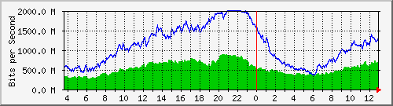
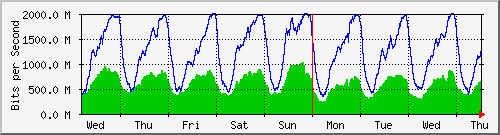
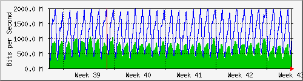
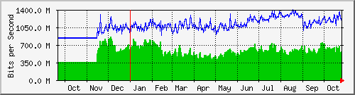

Traffic Analysis for Po2 -- ISP-border.sky
| System: | ISP-border.sky in Stoika |
| Maintainer: | falcon@skyinet.org |
| Description: | Port-channel2 link2spider |
| ifType: | propVirtual (53) |
| ifName: | Po2 |
| Max Speed: | 2000.0 Mbits/s |
| Ip: | No Ip (No DNS name) |
The statistics were last updated Thursday, 26 October 2017 at 12:55,
at which time 'ISP-border.sky' had been up for 8 days, 10:32:46.
`Daily' Graph (5 Minute Average)

|
Max |
Average |
Current |
| In |
893.2 Mb/s (44.7%) |
539.5 Mb/s (27.0%) |
644.0 Mb/s (32.2%) |
| Out |
1993.3 Mb/s (99.7%) |
1117.0 Mb/s (55.9%) |
1310.1 Mb/s (65.5%) |
`Weekly' Graph (30 Minute Average)

|
Max |
Average |
Current |
| In |
1033.7 Mb/s (51.7%) |
598.6 Mb/s (29.9%) |
650.6 Mb/s (32.5%) |
| Out |
1997.8 Mb/s (99.9%) |
1240.1 Mb/s (62.0%) |
1313.5 Mb/s (65.7%) |
`Monthly' Graph (2 Hour Average)

|
Max |
Average |
Current |
| In |
1054.0 Mb/s (52.7%) |
627.0 Mb/s (31.3%) |
551.1 Mb/s (27.6%) |
| Out |
1985.3 Mb/s (99.3%) |
1195.1 Mb/s (59.8%) |
1057.7 Mb/s (52.9%) |
`Yearly' Graph (1 Day Average)

|
Max |
Average |
Current |
| In |
864.2 Mb/s (43.2%) |
557.7 Mb/s (27.9%) |
561.8 Mb/s (28.1%) |
| Out |
1398.6 Mb/s (69.9%) |
1079.4 Mb/s (54.0%) |
1234.8 Mb/s (61.7%) |
| GREEN ### |
Incoming Traffic in Bits per Second |
| BLUE ### |
Outgoing Traffic in Bits per Second |